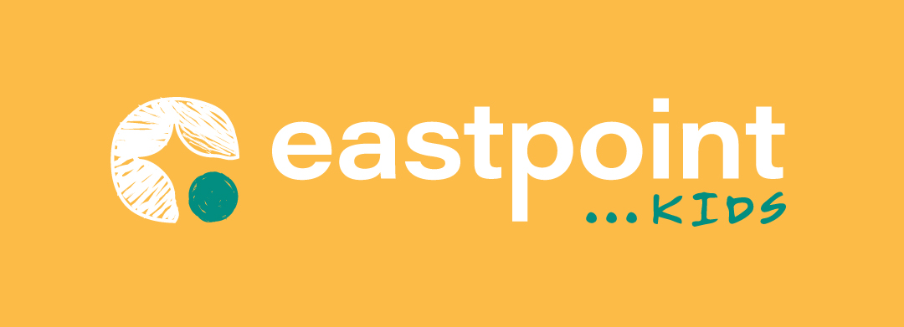

SEP6
Brunch Sunday — CAKE!
10:30am–12pm • Bring a favourite cake to share

A place to belong • A place to believe
COME ON IN! 〰️ ✦
Everything you need for Eastpoint Kids — what’s happening this Sunday, family prayer, useful information and ways we can help every child feel welcome.
See this SundayThis Sunday looks a little different — we’re gathering as one big Eastpoint family for Brunch Sunday.
This month’s theme is CAKE! Bring a favourite cake to share if you can, come hungry, and join us as we eat together, catch up and hear what God has been doing in each other’s lives.
Church doesn’t stop when Sunday finishes. Try one of these around the table, in the car or at bedtime.
💬 What was your favourite part today?
💬 What did you notice about God?
💬 Did you feel God saying anything to you?
💬 Is there anything you’d like us to pray about together?
Carry worship into the week with our Eastpoint Kids playlists.
We want everyone to feel welcome and able to join in as themselves. Every person is different, so please tell us what helps you or your child.
We have SEN Bags available for both children and adults, with ear defenders, fidgets and sensory resources inside. You’ll find them on the SEN table — simply take a bag if it would help. We just ask that you keep it safe during the morning, return everything to the bag when you’ve finished, and pop it back on the table before you leave.
You’re welcome to tell us about:
10:30am–12pm • Bring a favourite cake to share
Sunday morning
1:30–3:00pm • Free family event
Sunday morning • Everyone together
Sunday morning
A named water bottle is useful. Other than that, just bring yourselves! We have SEN bags with ear defenders, fidgets and sensory resources available if they would help.
Please talk to us. We want to understand your child rather than make assumptions. Tell us what helps, what makes things harder, and how they communicate when they need a break.
That’s okay. Children can take time to settle. Our aim is invitation rather than pressure, and we’ll work with you to help them feel comfortable and included.
All of our Eastpoint Kids leaders are DBS checked and follow Eastpoint Vineyard Church’s safeguarding policies and procedures. We also make sure there is a trained First Aider at every service and event we run.
Speak to one of the Kids Team, or chat to Michelle or Joy, who jointly coordinate Eastpoint Kids. They’d love to help you find out more about joining the team.